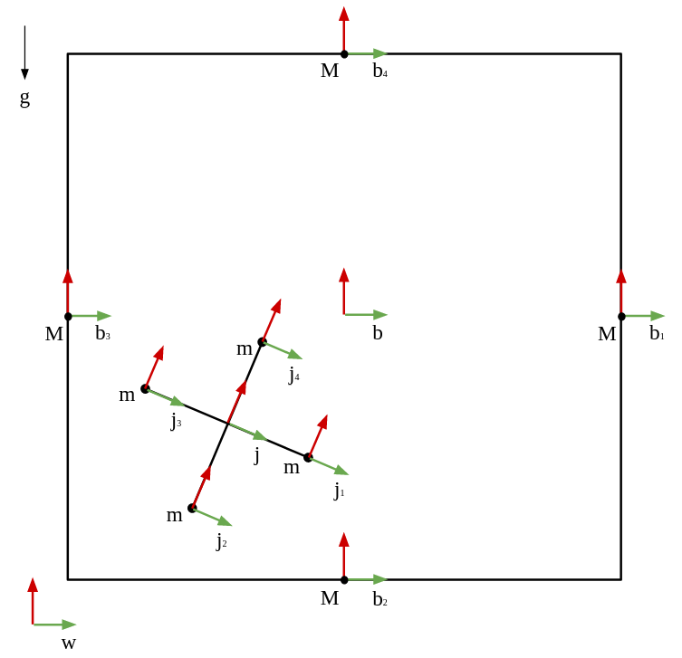

Jack-in-a-Box Dynamic Simulation
Python | Dynamic Simulation | Rigid Body Dynamics | Impact Analysis
November 2020 — December 2020
Description
In this project, I simulated and animated the dynamics of a planar jack-in-a-box system.
The simulation forecast the dynamic of the multi-body system in time, while the bodies experience multiple impacts between each other (impacts between the jack's masses and the box’s walls).
Take a look at the project on my GitHub page.

Jack-in-a-box - dynamic simulation
Overview
The dynamic system includes 2 rigid bodies in a planar system - a squared box and a 4-mass jack, as shown below.
On the two bodies acts external forces and gravity, that causes them to move and impact each other. The jack falls down with gravity, while on the box acts an equal and opposite force to gravity that keeps it in it's place. On the box also acts a sinusoidal torque that makes it rotate back and forth in a constant frequency.
The system can be define using the following configuration valuables: $$ q = \begin{bmatrix} x_{box} \\ y_{box} \\ \theta_{box} \\ x_{jack} \\ y_{jack} \\ \theta_{jack} \end{bmatrix} $$
Rigid-Body Transformations
In order to keep track of the position of the bodies through the simulation, I defined a series of sub-frame for every mass in the system that portray the location of the mass relative to the system's main frame.
The following drawing shown the different frames in the system:

Jack-in-a-box - system sketch
In order to transform between frames, I used several rigid-body transformations. The transformations where calculated using the standard form of rigid-body transformation: $$ g(x, y, \theta) = \begin{bmatrix} cos(\theta) && -sin(\theta) && 0 && x \\ sin(\theta) && cos(\theta) && 0 && y \\ 0 && 0 && 1 && 0 \\ 0 && 0 && 0 && 1 \end{bmatrix} $$ Where $x$ and $y$ represent the translation between the frames and $\theta$ represents the rotation between the frames.
In order to find the transformation between the two frames, I used transformation matrix multiplication: $$ g_{ac} = g_{ab} \cdot g_{bc} $$
Process Explanation
Before starting any calculations, I defined two external forces $F$ applied on the box at all times - the first force is equal and opposite to the gravity, and is intended to keep the box in the middle of the screen (for animation purposes). The second force causes a sinusoidal torque on the box and intended to rotate it (to make the simulation more interesting).
To simulate the system, I used the Euler-Lagrange equations and the impact laws.
In order to compute the Euler-Lagrange equations, I calculated the transformation matrices described above and used them to calculate the velocities and inertia matrices of the rigid-bodies.
The body velocity were calculated using the body transformations (for every body $i$) using: $$ V = ({g_{w,i}}^{-1} \cdot ({g_{w,i}}^{-1})') $$
The inertia matrices were calculated using the body mass and inertia (for every body $i$): $$ I = \begin{bmatrix} m && 0 && 0 && 0 && 0 && 0 \\ 0 && m && 0 && 0 && 0 && 0 \\ 0 && 0 && m && 0 && 0 && 0 \\ 0 && 0 && 0 && J_x && 0 && 0 \\ 0 && 0 && 0 && 0 && J_y && 0 \\ 0 && 0 && 0 && 0 && 0 && J_z \end{bmatrix} $$ Where $m$ is the body's mass and $J$ is the body's inertia. In a planar system, $ J_x = J_y = 0 $.
Then, I calculated the kinetic and potential energy of the system in order to compute the Lagrangian: $$ KE = \frac{1}{2} \sum (V_i^T \cdot I_i \cdot V_i) $$ $$ PE = \sum (g \cdot m_i \cdot y_i) $$ $$ L = KE - PE $$
Then, I took a derivative of the Lagrangian with respect to the configuration vector q to get the left side of the E-L equations, and compared that to the force vector: $$ \biggl(\frac{\partial L}{\partial q'}\biggr)' - \frac{\partial L}{\partial q} = F $$
There are total of 16 possible impact scenarios (anyone of the jack's masses can impact anyone of the box's walls). To compute the impacts, I defined 16 impact constraints. The impact constraints were the distance between the jack's mass to the wall, for every wall and mass – when the distance is 0, an impact occurs. All of the impacts in this system are ideal elastic impacts.
For the right/left wall, the constraints depended only on the x axis: $$ \varphi_{b1/b3-ji} = g_{b1/b3-ji}[x] $$
For the top/bottom wall, the constraints depended only on the y axis: $$ \varphi_{b2/b4-ji} = g_{b2/b4-ji}[y] $$ Where $i$ is the jack's mass number.
To compute the impact equations, I calculated the Hemiltonian: $$ H = \frac{\partial L}{\partial q'} \cdot q' - L $$
Then, I calculated the impact equations for every one of the possible impacts (16 possibilities) and the hemiltonian impact condition: $$ \begin{cases} \bigl(\frac{\partial L}{\partial q'}\bigr)'^+ - \bigl(\frac{\partial L}{\partial q'}\bigr)'^- = \lambda \cdot \nabla \varphi \\[2ex] H^+ - H^- = 0 \end{cases} $$
Dynamic Simulation
For every timestep ($\Delta t = 0.01 sec$), I checked for impacts and updated the configuration accordingly.
The system started from rest (besides the box's angular velocity), and both the box and the jack started from $(0, 0)$ in the world frame. In this simulation, I chose the box walls to be $12m$ and $100kg$, and the jack tips to be $1m$ and $1kg$ (i.e. $m_{box} >> m_{jack}$)
You can see the simulation results in the following short video:
Jack-in-a-box - system animation
The full project description can be found here.